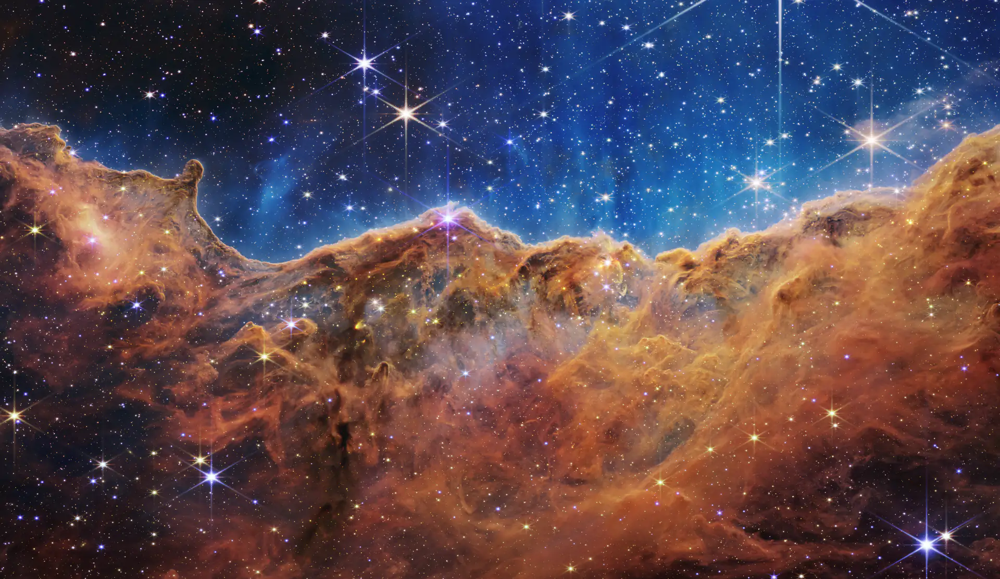
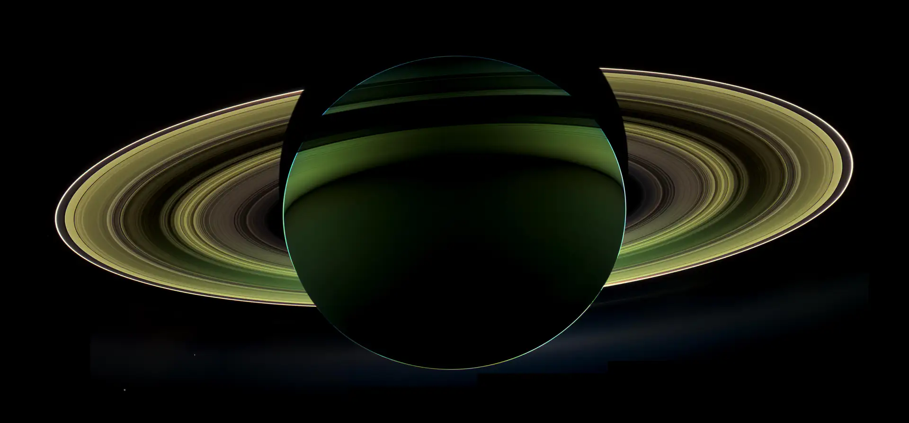
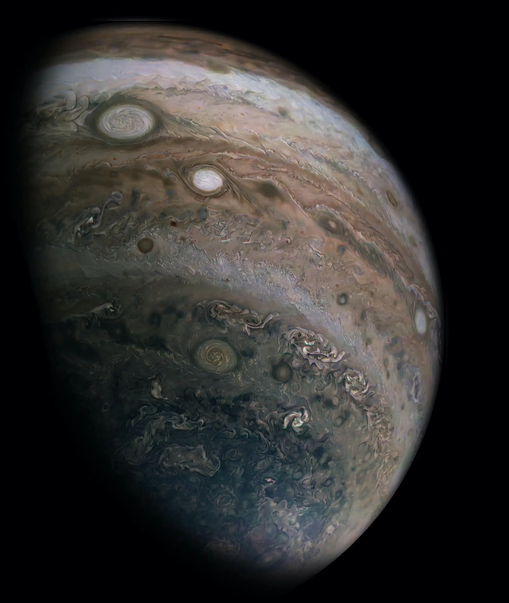
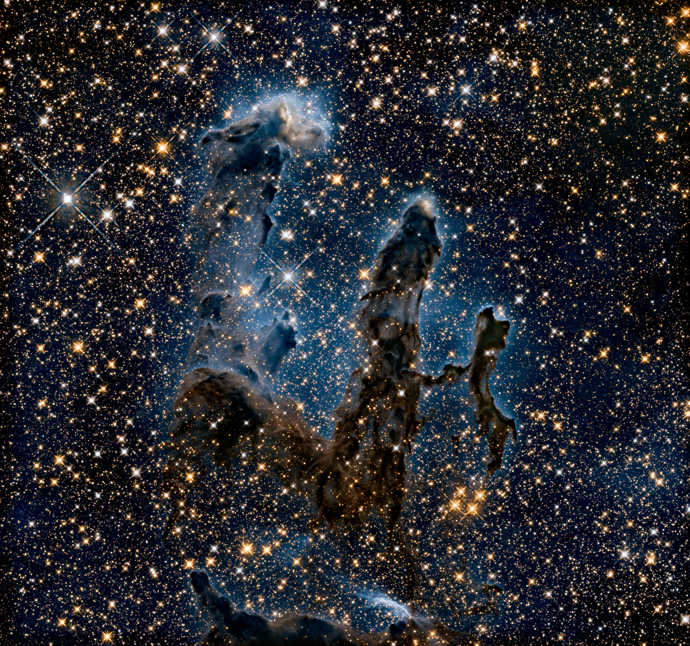
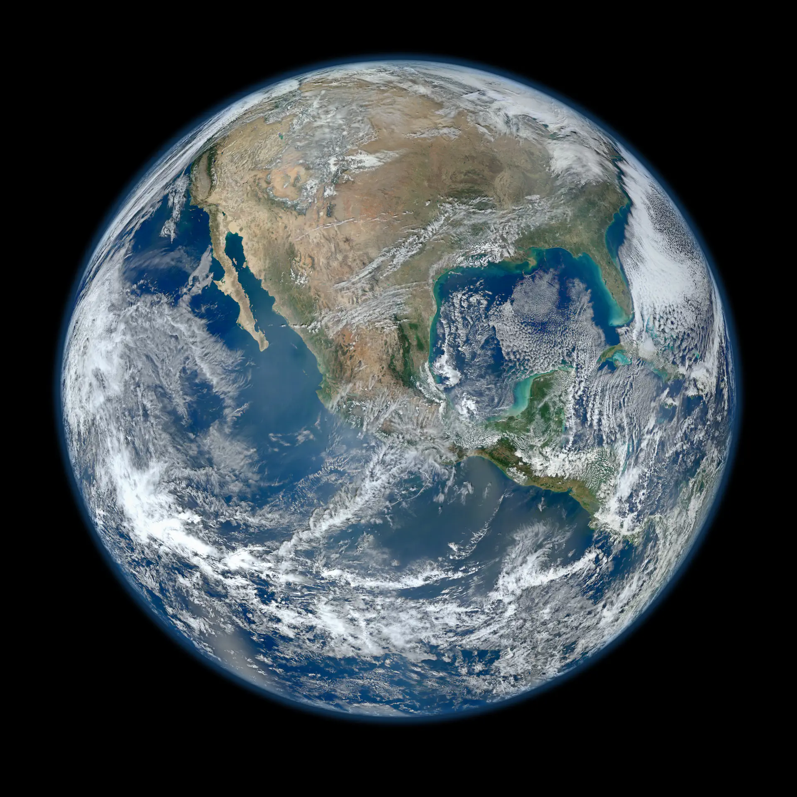
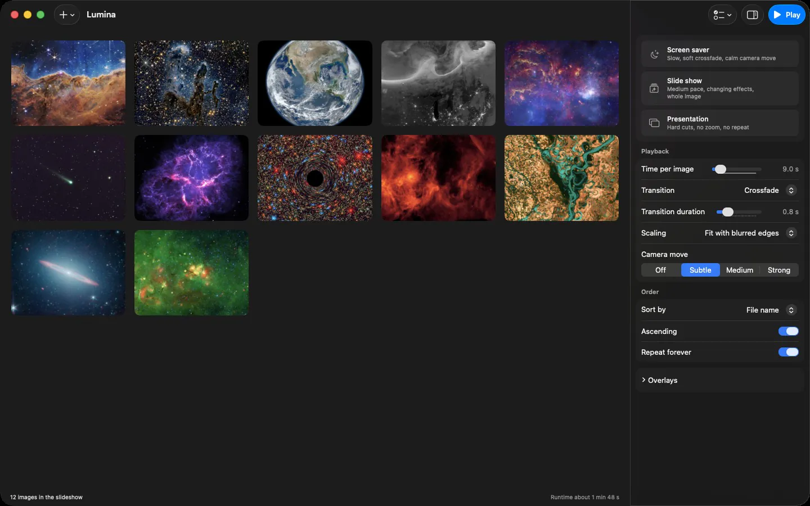
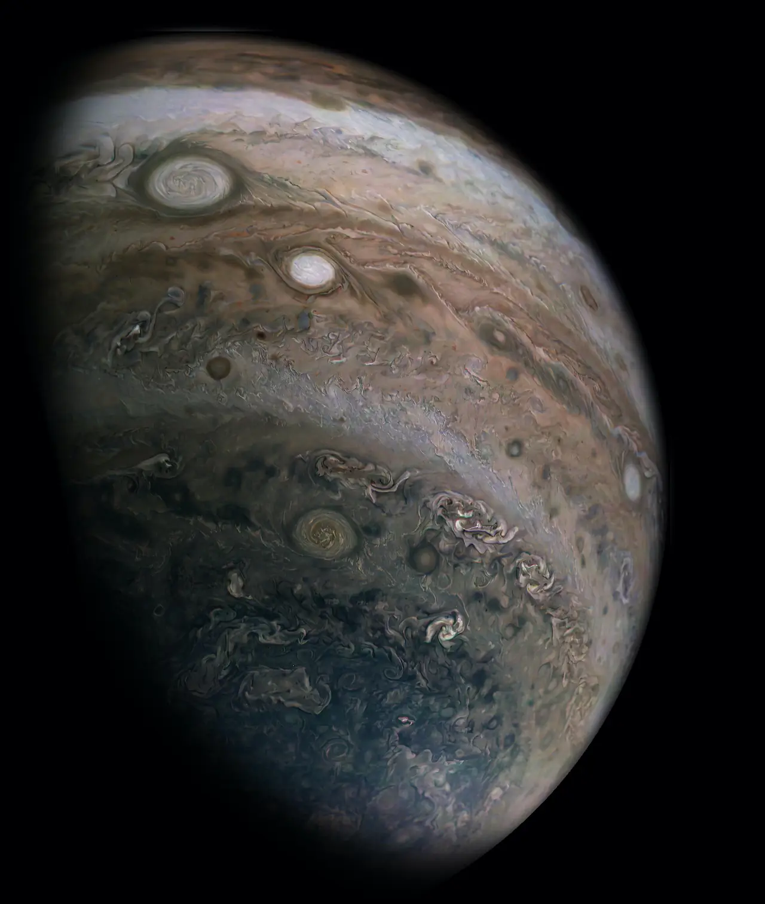
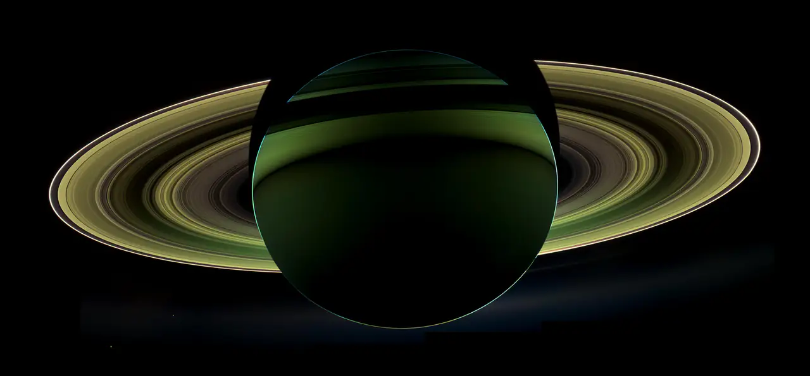

This page is a slideshow.
Scroll, and Lumina's own transitions play under your hand: a free, open-source slideshow app for the Mac.
Ken Burns · Medium Zoom to 1.14, pan 0.05 of the edge, over each slide's hold. Seeded per image.
Crossfade Opacity only. Nothing moves. 1.0 s by default.
Push In from the trailing edge, out through the leading edge. Both travel together, like a film strip.
Wipe A rectangular mask grows from the trailing edge. The outgoing fades.
Flip Two half phases: the outgoing turns away with ease-in, the incoming turns in with ease-out, half a duration later.
Four of seven. Hard cut, Slide and Zoom are waiting in the picker at the end.
Three answers to a square photograph.
The slide you just landed on is square. Your display is not. Lumina's scale modes decide what happens at the edges.
Deliberately small.
No library, no import, no database, no telemetry, no accounts. You point Lumina at folders, it plays them, it forgets them again.

- Animated formats actually play
- Animated WebP, GIF and APNG run frame for frame, decoded through libwebp: roughly 186x faster than the system decoder on long animations.
- Six languages
- English, German, French, Italian, Spanish and Japanese, following the system language.
- Updates handle themselves
- New versions install on their own, verified against a public key built into the app.
Point it at a folder tonight.
Version 1.5.0. macOS 14 or later, Apple Silicon. Free and open source, MIT licence.
First launch
Lumina is signed but not notarized, so macOS blocks the first launch once. Open System Settings, Privacy and Security, scroll to Security, choose Open Anyway. Once only: after that, updates install themselves.
The picker, live


All eight entries of the app's picker. Each runs at the default 1.0 s, clamped in the app to 80 percent of the slide duration.